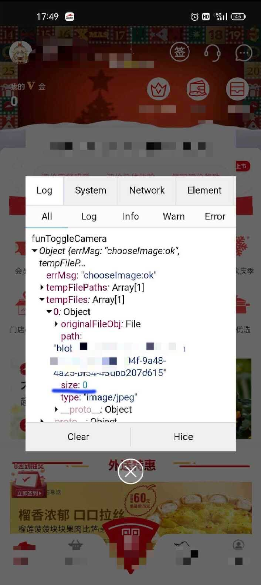

关于跨端
公司基本都选择采取敏捷开发，
快速的迭代版本，以应对瞬息万变的市场情况。
而每次版本迭代都要分别使用原生开发各端的项目，这明显是不现实的，
而且公司的人力成本也是决不允许这样做的。
这么下来使用可以实现跨端的框架，
即维护一套代码就可以部署在各个终端，成为了越来越多人的选择。
（约等于现在一个人干了以前 N 个人的活）
遇到的问题
- className 全局不要重名
支付宝小程序所有的组件样式会全局同步，同名的话会造成样式互相污染，且 RN 不支持。
- 样式类名不支持 less 嵌套语法，将类名平铺实现，RN 不支持。
1 | // bad |
- 避免使用 float、fixed 布局。
RN 不支持。
- 文本样式写在
<Text>标签，不要写在<View>标签。
RN 不支持。
- 边框的实现，避免直接写 0.5px。
边框宽度使用偶数像素如 2px。项目的 designWidth 是基于 750 的，在 375 的手机上就会解析成 1px，如果使用单数会解析成 0.5px，部分型号手机会丢失宽度默认为 0，导致边框的线无法显示。
Taro.getImageInfo获取图片信息返回值不同- 微信小程序平台 返回值示例
1
2
3
4
5
6errMsg: "getImageInfo:ok"
height: 64
orientation: "up"
path: "http://tmp/O3dPoGO2Eopw3e718fa1668604635a50f3ab88c97597.png"
type: "png"
width: 64- H5 平台 返回值示例 (无 orientation、path、type 字段)
1
2
3errMsg: "getImageInfo:ok"
height: 84
width: 84上传图片的行为实现不同
微信小程序平台
使用Taro.uploadFile封装好的 API 方法即可。
// uploadImage.js1
2
3
4
5
6
7
8
9
10
11
12
13
14export default function uploadImage(tempFile) {
const filePath = tempFile.path
console.log('uploadImage weapp', tempFile)
return Taro.uploadFile({
url: config.ph.upload.url, // 后台接口名
filePath: filePath, // : tempFilePaths[0],
// 后台字段名为为file 的name传file（根据后台定义的入参）
name: 'file',
header: {
'Content-type': 'multipart/form-data'
}
})
}H5 平台
使用Taro.request重新对上传文件请求进行封装处理。
// uploadImage.h5.js1
2
3
4
5
6
7
8
9
10
11
12
13
14
15
16
17
18
19export default function uploadImage(tempFile) {
const formData = new FormData()
formData.append('file', tempFile.originalFileObj)
return new Promise((resolve) => {
Taro.request({
url: config.ph.upload.url, // 后台接口名
data: formData,
method: 'POST',
dataType: '',
responseType: 'text',
timeout: 20000,
complete: (res) => {
console.log('uploadImage h5 request', res)
resolve(res)
}
})
})
}
Taro.getCurrentPages()获取页面栈 API 的结果不同建议获取页面信息统一使用
this.$router取值- 微信小程序平台
返回值数组中元素有 router 字段，为页面路由名称 - H5 平台
返回值数组中元素没有 router 字段，无法通过该 api 获取路由名称
- 微信小程序平台
顶部导航
需要做样式兼容
- 微信小程序平台
默认是有头部导航条 - H5 平台
默认是没有头部导航条的
- 微信小程序平台
CSS 的 animation 动画效果 RN 端不支持
Taro.chooseImage()H5 端在 APP 浮层中使用 部分安卓机型取消也会触发成功回调
选择图片，然后在选择相机或者相册时，直接取消。
Taro.chooseImage 也会触发成功回调，不过 size 为 0。
可以通过 size 这个字段来进行筛选。

- ios 拍照上传图片，H5 端会有旋转 90 度的问题
这个应该是 ios 的自身问题。
不过可以通过曲线救国的方式解决这个问题，
首先要知道图片是否旋转了，可以通过 exif.js 这个插件，根据得到的 Orientation 属性，获取到它的拍照方向。
其次，创建一个 image 标签去接收文件获取图片的宽高和比例
| 旋转角度 | 参数 |
|---|---|
| 0° | 1 |
| 顺时针 90° | 6 |
| 180° | 3 |
| 逆时针 90° | 8 |
然后，将图片转为 base64 格式，通过 canvas 标签，绘制在上面，再通过 api 将其旋转。
1 | // 旋转画布(弧度制) |
随后，将旋转后的图片，保存为 base64 格式
（根据需求看是否需要前端将图片压缩，如需压缩则通过该步骤进行压缩）
1 | // canvas绘制的图片转为base64 |
最后，将 base64 转换为接口上传所需要的格式（Blob），进而完成图片的上传功能。
- H5 获取参数通过 this.$router.params 获取不到参数中携带=等字符
1 | if (process.env.TARO_ENV === "h5") { |
- 微信 H5 长按图片识别码功能。
如果屏幕内有很多码，长按没有完整展示在屏幕内的码，
进行识别的时候，可能会识别出是屏幕其他码的信息。（疑似是微信的自身 bug）
- 获取用户信息 API getUserProfile
Taro.getUserProfile 不支持微信小程序。（Taro2.x 版本）
解决方案为如果是微信小程序端，通过 wx.getUserProfile 去调用，其他端则不作处理跳过该逻辑
- H5 端 如果元素设置绝对定位，通过 bottom 控制位置不准确。
当有 Input 聚焦的时弹出输入法，部分安卓机型，此时屏幕高度会被调整。（device.windowHeight 高度会改变）
此时如果通过 absolute + bottom 布局，元素就会被输入法挤上去。
解决方案为页面渲染之前，将屏幕高度获取到，并且计算好元素的对应 top 或者 margin-top，然后引用到对应元素上即可。
文字要包在 Text 组件里面，否则 RN 端会不显示
RN 动画不支持：Animation 和 transform
RN 与 H5/小程序 的 flex 布局相关属性的默认值有差异，所以需要显式声明，不采用默认值。
flexDirection 指定布局的主轴。
RN 子元素默认是沿着 竖直轴(column) 方向排列；这点和 CSS 不一样，需要注意
- 选择器的写法
- 基本选择器只支持类选择器
- 不支持组合选择器的写法
- 不支持伪类及伪元素
- 读写缓存
RN 端不支持 setStorageSync 需要改用 setStorage
RN 端不支持 getStorageSync 需要改用 getStorage
RN 端不支持 removeStorageSync 需要改用 removeStorage
参考资料
- 1. Taro 多端开发文档
- 2. taro 框架的缺陷以及注意事项
- 3. Taro 兼容 h5 踩坑指南
- 4. window.close()不能关闭页面时的解决办法及思路
- 5. h5 跨域访问图片_Taro - 本地 H5 无法访问远程服务器（跨域问题）
- 6. Taro 踩坑记之 React-Native 环境教程
- 7. I can not install pod files. #10718
- 8. How to running CocoaPods on Apple Silicon (M1)
- 9. 解决 ios 上传图片被旋转的问题
后记
如果后续有遇到的会随时更新。